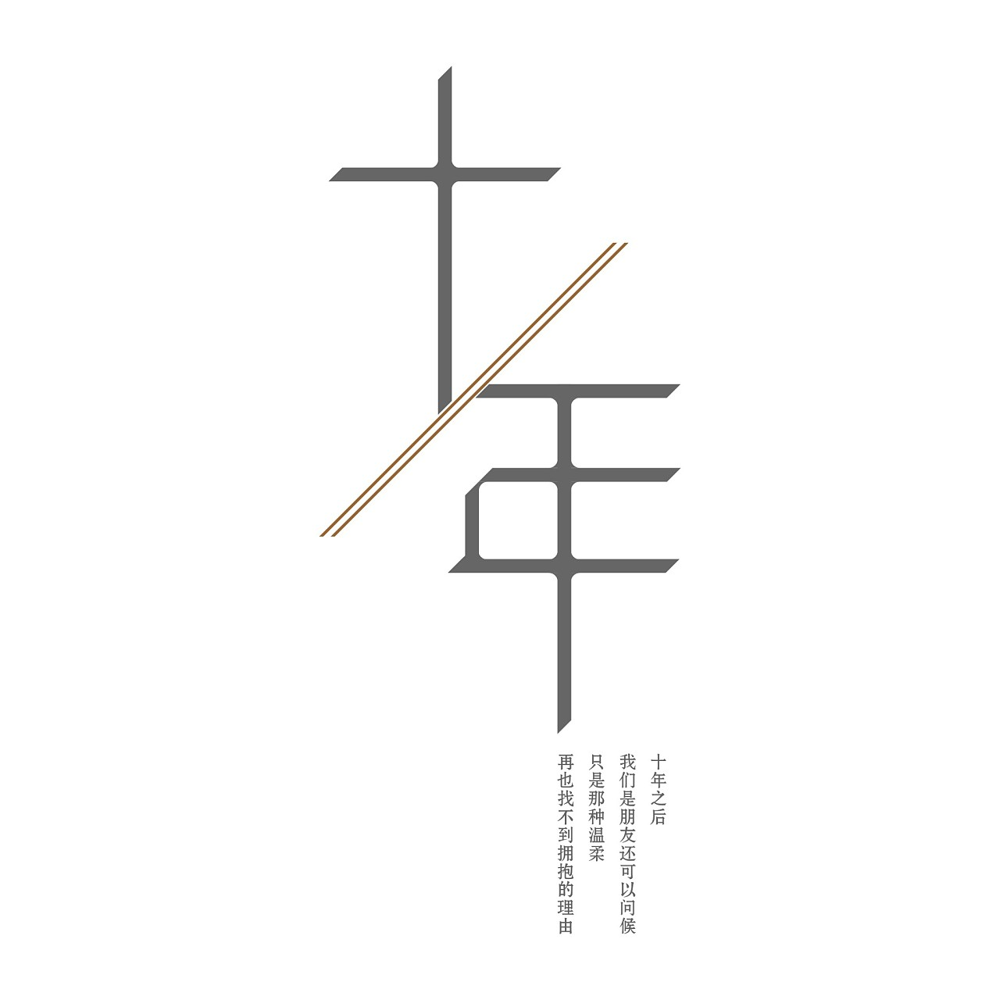

<!DOCTYPE html">
<html >
<head>
<meta http-equiv="Content-Type" content="text/html; charset=utf-8" />
<title>我的个人网页</title>
<link href="images/css.css" rel="stylesheet" type="text/css" />
<style type="text/css">

</style>
</head>
<body>
<audio src="tenyear.mp3" autoplay="autoplay">
</audio>
</body>
</html>
<body>
<table width="100%" border="0" cellpadding="0" cellspacing="0" class="nav">
  <tr>
    <td></td>
    <td width="100" align="center"><a href="index.html">个人介绍</a></td>
    <td width="100" align="center"><a href="haoyou.html">我的偶像</a></td>
    <td width="100" align="center"><a href="photo.html">生活写照</a></td>
    <td width="100" align="center"><a href="rizhi.html">鼓励自己的话</a></td>
    <td width="100" align="center"><a href="yinyue.html">我最喜欢的音乐</a></td>
  </tr>
</table>
<table width="800" border="0" align="center" cellpadding="0" cellspacing="0" class="main">
  <tr>
    <td></td>
  </tr>
  <tr>
    <td><table width="800" border="0" cellspacing="10" cellpadding="0">
      <tr>
        <td colspan="2"><div class="title">
          <p >我最喜欢的音乐——十年</p>
        </div></td>
        </tr>
      <tr>
        <td valign="top"><p >十年-陈奕迅 </p>
          <p >《十年》是陈奕迅演唱的一首歌曲，由林夕作词，陈小霞作曲，陈辉阳编曲，收录在陈奕迅2003年4月15日由英皇唱片发行的专辑《黑白灰》中 </p>
          <p >该歌曲是电视剧《女才男貌》的片尾曲， 亦是电影《摆渡人》《隐婚男女》的插曲，粤语版本为《明年今日》，收录在陈奕迅2002年由英皇唱片发行的粤语专辑《The Line-Up》中。 </p>
          <p >2004年，该歌曲获得第四届百事音乐风云榜十大金曲。2011年，该歌曲获得LOVE RADIO 103.7FM主办的“新世纪十年十大华语情歌”冠军。 </p>
<p >歌曲歌词： </p>
          <p >如果那两个字没有颤抖 </p>
          <p >我不会发现我难受 </p>
	<p >怎么说出口 </p>
	<p >也不过是分手 </p>
          <p >如果对于明天没有要求 </p>
          <p >牵牵手就像旅游 </p>
	<p >成千上万个门口 </p>
          <p >总有一个人要先走 </p>
          <p >怀抱既然不能逗留 </p>
	<p >何不在离开的时候 </p>
          <p >一边享受 一边泪流</p>
          <p >十年之前</p>
	<p >我不认识你 你不属于我</p>
	<p >我们还是一样</p>
	<p >陪在一个陌生人左右</p>
	<p >走过渐渐熟悉的街头</p>
	<p >十年之后</p>
	<p >我们是朋友 还可以问候</p>
	<p >只是那种温柔</p>
	<p >再也找不到拥抱的理由</p>
	<p >情人最后难免沦为朋友</p>
	<p >怀抱既然不能逗留</p>
	<p >何不在离开的时候</p>
	<p >一边享受 一边泪流</p>
	<p >十年之前</p>
	<p >我不认识你 你不属于我</p>
	<p >我们还是一样</p>
	<p >陪在一个陌生人左右</p>
	<p >走过渐渐熟悉的街头</p>
	<p >十年之后</p>
	<p >我们是朋友 还可以问候</p>
	<p >只是那种温柔</p>
	<p >再也找不到拥抱的理由</p>
	<p >情人最后难免沦为朋友</p>
	<p >直到和你做了多年朋友</p>
	<p >才明白我的眼泪</p>
	<p >不是为你而流</p>
	<p >也为别人而流</p>	
<p><br />
          </p></td>
        <td valign="top"><table width="200" border="0" cellspacing="0" cellpadding="0">
          <tr>
            <td></td>
          </tr>
          <tr>
            <td></embed>
             </td>
          </tr>
          <tr>
            <td></td>
          </tr>
          <tr>
            <td>&nbsp;</td>
          </tr>
        </table></td>
        </tr>
      <tr>
        <td colspan="2">&nbsp;</td>
        </tr>
    </table></td>
  </tr>
  <tr>
    <td>&nbsp;</td>
  </tr>
</table>
</body>
</html>
